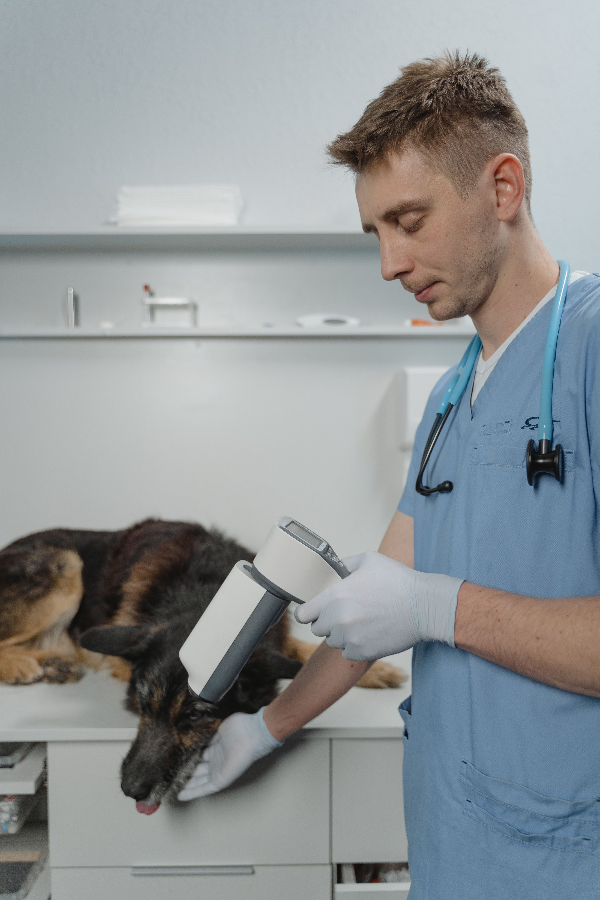

Hospital veterinario · Valdivia
Pedir otra opinión
no ofende a nadie
Cuando el diagnóstico es grave o el tratamiento no avanza, casi todos los dueños piensan en consultar en otra parte — y casi ninguno lo hace, por no incomodar. Esta página existe para decir que es normal, que es su derecho, y cómo se hace.
- reseñas en Google
- 161
- teléfono
- 9 9139 6267
El primer paso
Pedir los exámenes
Los exámenes, las imágenes y el informe de su animal son suyos. Pedirlos no es un acto de desconfianza ni requiere explicación: es pedir una copia de algo que ya pagó y que le pertenece.
Qué pedir, concretamente. Los resultados de laboratorio, las imágenes —radiografías o ecografías— y el informe o la ficha con lo que se hizo y qué se indicó. Con eso, cualquier veterinario puede formarse una opinión sin repetir todo desde cero.
Repetir exámenes que ya existen no sólo cuesta plata: en algunos casos significa volver a sedar a un animal que ya pasó por eso. Llevar las copias es cuidarlo.
Lo que cuesta decir
Qué decir
(nadie se enoja)
Es la parte que frena a la mayoría: la sensación de estar traicionando a alguien que ha atendido bien a su animal. No lo es, y decirlo claro es lo mínimo que puede hacer una página de un hospital veterinario.
-
«Quiero pedir una segunda opinión, ¿me puede facilitar los exámenes?»
Es todo. No hace falta justificar nada más, y ningún profesional serio se ofende: es una práctica normal en medicina, humana y veterinaria.
-
«Prefiero consultar con alguien antes de decidir la cirugía.»
Frente a una decisión grande, tomarse el tiempo es razonable. Un buen veterinario lo entiende — y muchas veces lo sugiere él mismo.
Esta página no dice que desconfíe de nadie. No hay ninguna insinuación acá sobre otros profesionales ni sobre otras clínicas. Lo que hay es un derecho del dueño, dicho en voz alta: en medicina las segundas opiniones son parte del oficio, y la mayoría de las veces terminan confirmando lo que ya se había dicho.
Cuándo tiene sentido
La nueva mirada
No toda consulta necesita una segunda opinión. Estas tres situaciones son las que en general la justifican — y en las tres, pedirla temprano vale más que pedirla tarde.
-
Un diagnóstico grave
Sobre todo si implica una decisión difícil. Escuchar lo mismo dos veces da la tranquilidad de haber hecho todo; escuchar algo distinto abre una alternativa que no existía.
-
Una cirugía mayor
Por el riesgo, por el costo y porque no siempre hay una sola forma de resolver algo. Preguntar qué otras opciones existen es parte de decidir bien.
-
Un tratamiento que no avanza
Semanas de tratamiento sin mejoría no significan que alguien lo hizo mal: significan que conviene mirar de nuevo, y a veces con otros ojos.
- Cómo se recibe acá una segunda opinión
- falta: confirmar con la clínica Si se pide hora normal, si hay que avisar que se trae material de otra parte, si conviene mandar los exámenes antes. Son tres datos y hacen toda la diferencia para alguien que ya está nervioso.
- Si se puede enviar los exámenes antes de la hora
- falta Revisar el material antes hace que la consulta rinda el doble.
Después
Volver o quedarse
Una segunda opinión no obliga a cambiarse. Lo más frecuente es que confirme lo anterior, y entonces el dueño vuelve donde estaba — con la cabeza tranquila, que era todo el punto.
Y si la opinión difiere, tampoco hay que decidir en el momento. Lo sano es preguntar en qué se basa cada una, si hay algún examen que aclare la diferencia, y recién ahí elegir. Nada de esto es una competencia entre profesionales: es un animal al que hay que resolverle un problema.
Publicar esto tiene un costo y una ganancia. El costo es admitir que el dueño puede irse a otra parte. La ganancia es que la clínica que se atreve a decirlo se vuelve, para mucha gente, la primera a la que van a llamar.

Lo que hay que llevarse
Los exámenes son del animal, no de la clínica
Radiografías, análisis, informes: todo eso es del dueño y se puede pedir. Sin esos papeles, la segunda opinión empieza de cero —y significa repetir exámenes, repetir el gasto y hacer esperar al animal—. Pedirlos no ofende a nadie: es lo normal, y una clínica que lo dice primero se ahorra la conversación incómoda.
La transparencia como política
Sus exámenes
son suyos
Lo anterior sólo funciona si conseguir los papeles es fácil. Escribir qué se entrega y cómo convierte una promesa en una política.
- Qué documentos se entregan
- falta: confirmar Resultados, informes, imágenes, ficha. Y si algo no se entrega, decir por qué.
- En qué formato
- falta Papel, correo, mensaje. Las imágenes digitales son las que más problemas dan y las que más se agradecen.
- Cuánto demora
- falta «En el momento» o «al día siguiente». Cualquiera sirve; no saberlo es lo que desespera.
- Si tiene costo
- falta Si copiar imágenes tiene un costo, se dice antes. Es la clase de cobro que molesta sólo cuando sorprende.
- Hasta cuándo se guarda la ficha
- falta Para el que vuelve después de años con el mismo animal.
Cinco respuestas. Con ellas escritas, esta clínica pasa a ser la que no le pone problemas a nadie — y eso, en un pueblo grande como Valdivia, se sabe rápido.
Pedir una segunda opinión no es desconfiar
Es lo que haría cualquiera con un familiar
Para pedir hora o consultar
9 9139 6267
Es el número publicado en su ficha de Google.